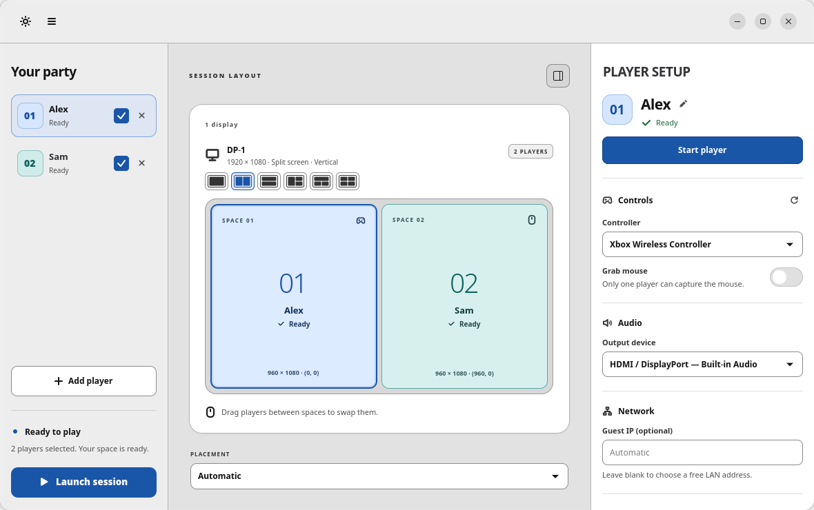
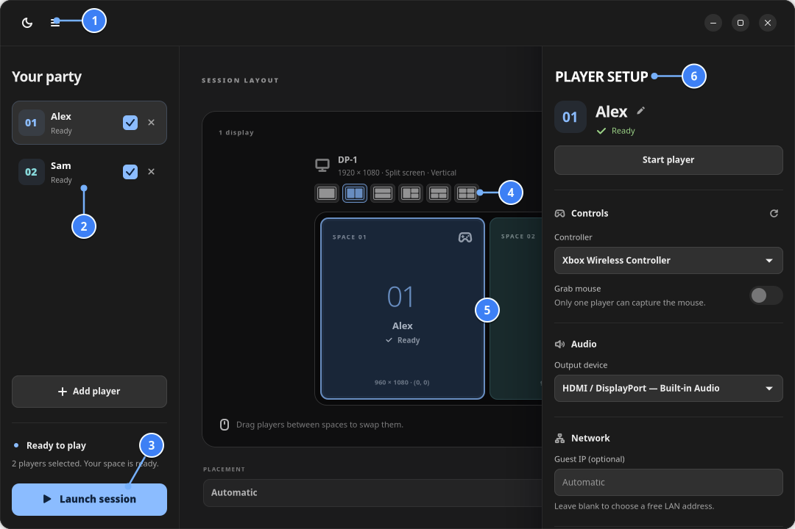
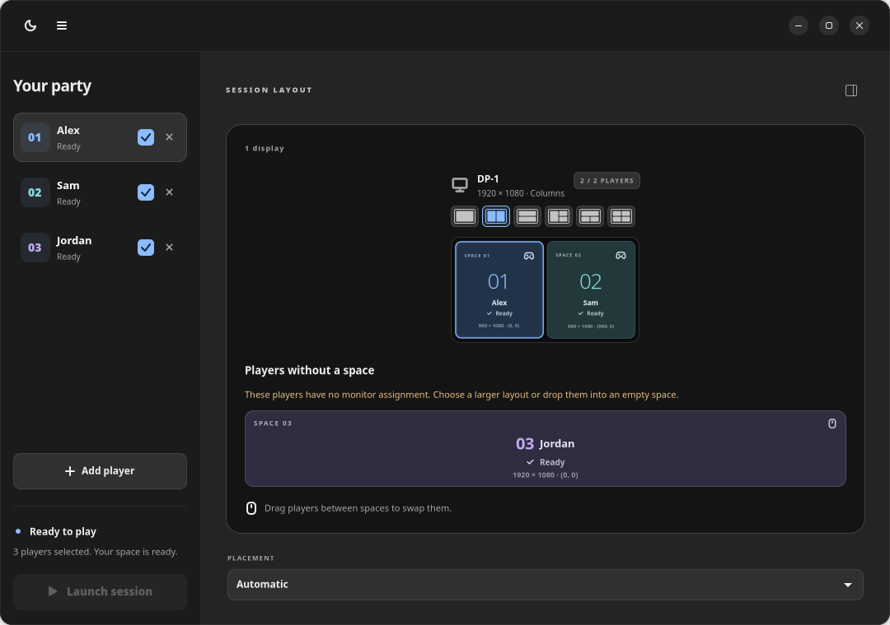
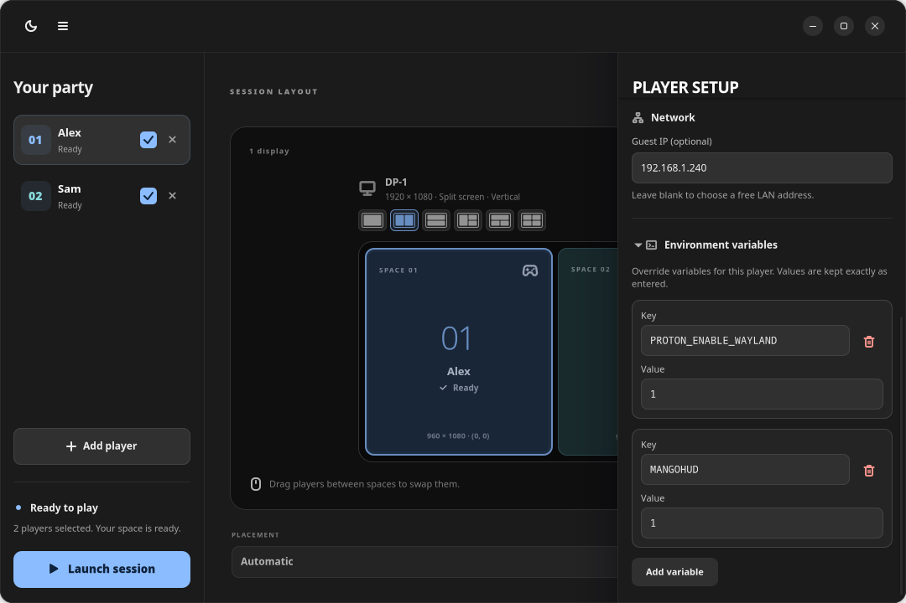
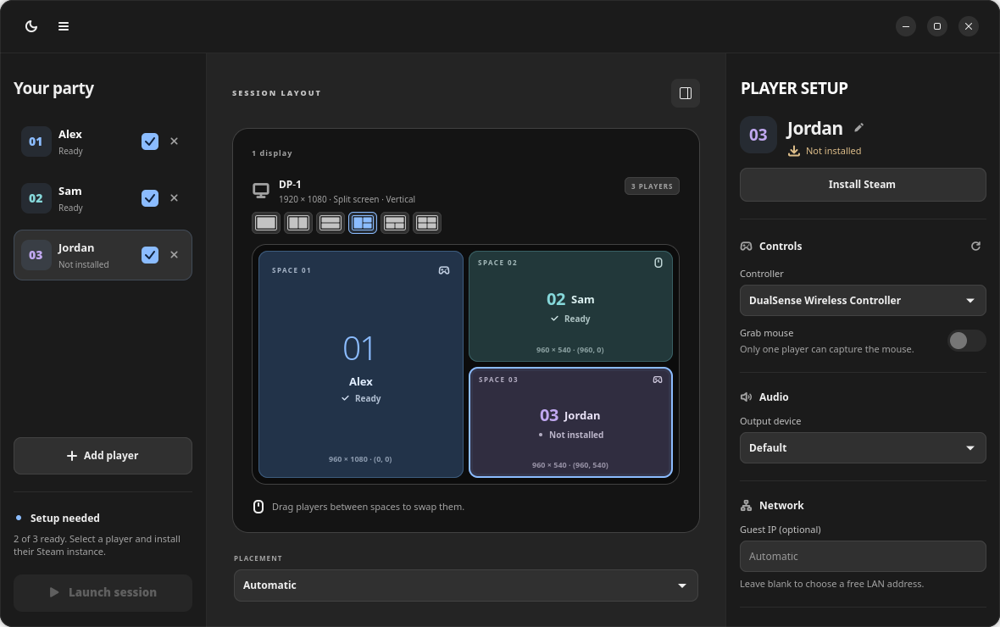
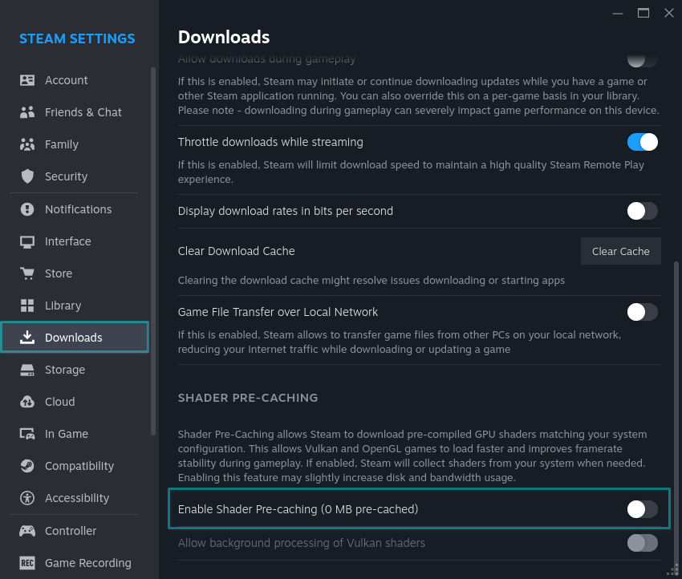
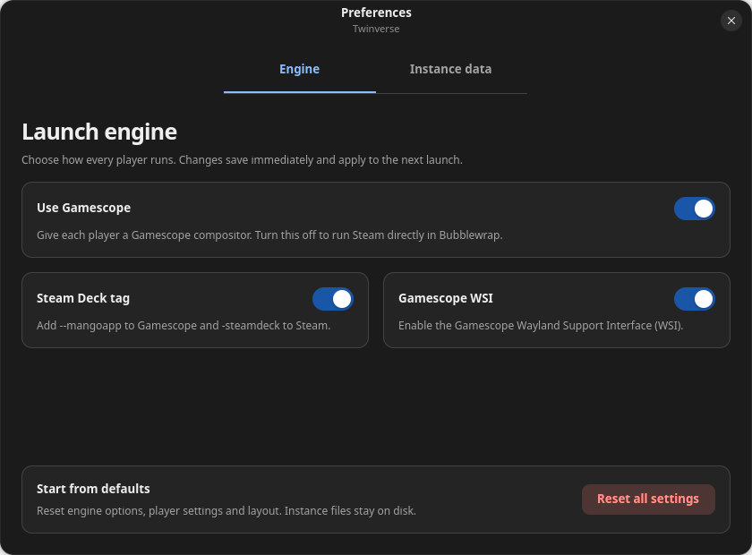
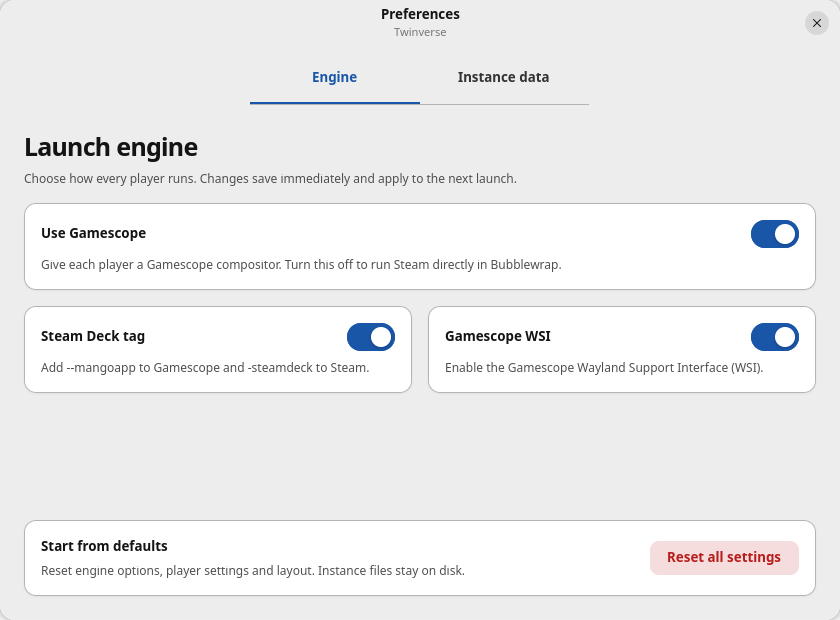
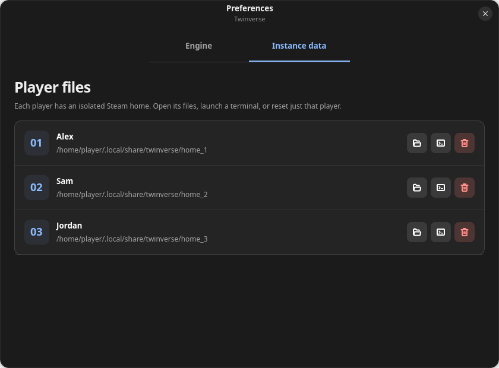

Linux & SteamOS Multi-Instance GamingMulti-Instância Steam para Linux e SteamOS
Twinverse DocumentationDocumentação do Twinverse
Run up to 8 isolated Steam Big Picture instances simultaneously on a single Linux or SteamOS computer. Play in splitscreen or across multiple monitors with dedicated controllers (including full isolated Steam Input and mid-session hotplug reconnection), audio outputs, home folders, and private LAN IPv4 addresses—without duplicating a single gigabyte of game files.Execute até 8 instâncias isoladas do Steam Big Picture simultaneamente em um único computador com Linux ou SteamOS. Jogue em tela dividida ou em múltiplos monitores com controles dedicados (incluindo Steam Input isolado e reconexão hotplug no meio da partida), saídas de áudio, pastas home e endereços IPv4 dedicados—sem duplicar um único gigabyte de jogos.
Twinverse (Dark Mode) — Three-pane workspace with the Party Roster on the left, live monitor tiling canvas in the center, and Player Setup inspector on the right.Twinverse (Modo Escuro) — Área de trabalho em três painéis com a lista de jogadores (Party) à esquerda, pré-visualização interativa de monitores ao centro e o inspetor Player Setup à direita.

Twinverse (Light Mode) — Switch themes anytime with the header button. Theme preference is persisted across restarts.Twinverse (Modo Claro) — Alterne o tema a qualquer momento pelo botão no cabeçalho. A preferência é salva automaticamente.
Per-Monitor Tiling & Drag-and-DropMoldes por Monitor e Arrastar-e-Soltar
Choose from 6 tiling templates per monitor (1 to 4 spaces each), mix templates across displays, and drag players directly between spaces.Escolha entre 6 moldes por monitor (1 a 4 espaços cada), combine moldes entre monitores e arraste jogadores diretamente entre os espaços.
Full Steam Input, Hotplug & Audio IsolationSteam Input, Hotplug e Isolamento de Áudio
Pure-Rust userspace /dev/uinput virtualization keeps Steam Input strictly per-instance, reconnects unplugged controllers mid-session, filters /dev/hidraw* dynamically, and routes sound to each player's PipeWire/PulseAudio sink.Virtualização de /dev/uinput em Rust puro mantém o Steam Input isolado por instância, reconecta controles desconectados no meio da partida, filtra /dev/hidraw* dinamicamente e direciona o som para a saída PipeWire/PulseAudio de cada jogador.
Shared Game Library & Any ProtonBiblioteca Compartilhada e Qualquer Proton
All players share your host steamapps/common/ and compatibilitytools.d/ (ProtonGE, etc.) while keeping independent saves and Steam accounts.Todos os jogadores compartilham steamapps/common/ e compatibilitytools.d/ (ProtonGE, etc.), mantendo saves e contas Steam independentes.
Rootless Per-Instance NetworkingRede Isolada sem Root
With pasta installed, every instance gets its own free LAN IPv4 address so local co-op and dedicated servers connect directly without relays.Com o pasta instalado, cada instância recebe um IPv4 livre na rede local, evitando conflitos de porta e relays em partidas locais.
Fair Play & Legal NoticeAviso Legal e Uso Legítimo
Twinverse does not support piracy and never modifies or patches Steam. Every player must sign into an official Steam account that legitimately owns (or has authorized access to) the games being played.O Twinverse não apoia pirataria e nunca modifica ou aplica patches no Steam. Cada jogador deve entrar em uma conta oficial do Steam que possua legitimamente (ou tenha acesso autorizado aos) jogos executados.
Before You BeginAntes de Começar
System Requirements & PreparationRequisitos do Sistema e Preparação
Twinverse orchestrates native Linux sandboxing and display tools already available on your host system—even when Twinverse itself runs inside Flatpak (via flatpak-spawn --host).O Twinverse orquestra ferramentas nativas de sandboxing e vídeo instaladas no seu sistema host—mesmo quando o próprio Twinverse é executado via Flatpak (usando flatpak-spawn --host).
ComponentComponente
StatusStatus
Purpose & NotesFunção e Observações
steam
Required (Host)Obrigatório (Host)
Native distribution package (not Flatpak Steam). Provides the Steam runtime and shared ~/.local/share/Steam/steamapps/common/ library.Pacote nativo da distribuição (não o Steam Flatpak). Fornece o runtime e a pasta compartilhada ~/.local/share/Steam/steamapps/common/.
gamescope
Required (Host)Obrigatório (Host)
Native package. Micro-compositor that isolates resolution, refresh rate, cursor grabbing, and upscaling per player.Pacote nativo. Micro-compositor que isola resolução, taxa de atualização, captura de mouse e upscaling por jogador.
bwrap (bubblewrap)
Required (Host)Obrigatório (Host)
Creates isolated per-player home directories and masks /dev/input, pairing with Twinverse's bundled Rust userspace /dev/uinput shim and twinverse-input-bridge for isolated Steam Input and controller hotplug.Cria diretórios home isolados por jogador e mascara /dev/input, trabalhando com o shim nativo em Rust de /dev/uinput e o twinverse-input-bridge para Steam Input isolado e hotplug de controles.
pactl
Required (Host)Obrigatório (Host)
Provided by pipewire-pulse or pulseaudio-utils. Used to enumerate and assign dedicated audio output sinks.Fornecido por pipewire-pulse ou pulseaudio-utils. Usado para listar e atribuir saídas de áudio dedicadas.
pasta (passt)
Strongly RecommendedAltamente Recomendado
Enables automatic rootless per-instance network namespaces with distinct LAN IPv4 addresses. Must be installed on the host PATH (including for Flatpak users).Ativa isolamento de rede sem root por instância com endereços IPv4 distintos na LAN. Deve estar no PATH do host (inclusive para quem usa Flatpak).
mangoapp
OptionalOpcional
Used when Steam Deck tag is enabled in Preferences to provide performance overlay and Gamescope FPS limiter integration.Usado quando a opção Steam Deck tag está ativa nas Preferências para overlay de desempenho e limitador de FPS do Gamescope.
KDE Plasma 6.0+
Recommended DEDE Recomendado
Enables automatic KWin splitscreen & multi-monitor window tiling and panel dodging. On GNOME, Sway, Hyprland, or other DEs, everything works except automatic window placement (position windows manually).Ativa posicionamento automático via KWin em tela dividida e múltiplos monitores, além do modo dodge dos painéis. Em GNOME, Sway, Hyprland ou outros DEs, tudo funciona exceto o auto-tiling (posicione as janelas manualmente).
GPU Driver Requirements (Gamescope)Requisitos de Driver de GPU (Gamescope)
AMD:Mesa 20.3 or newerMesa 20.3 ou mais recente
Intel:Mesa 21.2 or newerMesa 21.2 ou mais recente
NVIDIA:Proprietary drivers 515.43.04+ or NVIDIA Open Kernel Module driversDrivers proprietários 515.43.04+ ou drivers NVIDIA Open Kernel Module
SteamOS & BazziteSteamOS e Bazzite
SteamOS (AMD) and Bazzite ship with Steam, Gamescope, Bubblewrap, and PipeWire pre-installed out of the box.SteamOS (AMD) e Bazzite já vêm com Steam, Gamescope, Bubblewrap e PipeWire pré-instalados por padrão.
Download & InstallDownload e Instalação
InstallationInstalação
Choose your preferred installation method. Official .flatpak bundles and .AppImage binaries are published on the GitHub Releases page.Escolha o método de instalação de sua preferência. Os pacotes oficiais .flatpak e binários .AppImage são publicados na página de Releases no GitHub.
Flatpak provides clean GTK4/libadwaita runtime isolation, automatic desktop menu integration, and sandboxed configuration storage while delegating steam, gamescope, bwrap, and pasta to the host.O Flatpak oferece isolamento limpo de runtime GTK4/libadwaita, integração automática ao menu de aplicativos e armazenamento organizado enquanto delega steam, gamescope, bwrap e pasta para o host.
Download the latest Twinverse-*.flatpak from Releases.Baixe o arquivo Twinverse-*.flatpak mais recente em Releases.
Add the Flathub remote (needed so Flatpak can fetch the GNOME runtime) and install the bundle:Adicione o repositório Flathub (necessário para o Flatpak baixar o runtime GNOME) e instale o pacote:
flatpak remote-add --user --if-not-exists flathub https://flathub.org/repo/flathub.flatpakrepo
flatpak install --user Twinverse-*.flatpak
# Launch from terminal (or open Twinverse from your application menu)
flatpak run io.github.mall0r.Twinverse
A single portable executable with embedded zsync delta-update metadata (compatible with AppImageUpdate and Gear Lever). Make sure bubblewrap is installed on your host.Um único executável portátil com metadados zsync para atualizações incrementais (compatível com AppImageUpdate e Gear Lever). Garanta que o pacote bubblewrap esteja instalado no host.
# Make executable and run
chmod +x Twinverse-*.AppImage
./Twinverse-*.AppImage
Desktop Integration TipDica de Integração ao Sistema
Use Gear Lever to add Twinverse to your application launcher and manage updates automatically.Use o Gear Lever para integrar o Twinverse ao menu do sistema e gerenciar atualizações automaticamente.
Running from source requires Python 3.12+, GTK4, libadwaita, and PyGObject on the system. Having Rust (cargo with x86_64-unknown-linux-gnu and i686-unknown-linux-gnu targets) installed enables building the native Steam Input and hotplug libraries automatically (otherwise Twinverse falls back to static device mounts). The bundled run.sh script compiles resources, native libraries, and sets up .venv automatically.Executar a partir do código-fonte requer Python 3.12+, GTK4, libadwaita e PyGObject no sistema. Ter o Rust instalado (cargo com os alvos x86_64-unknown-linux-gnu e i686-unknown-linux-gnu) compila automaticamente as bibliotecas nativas de Steam Input e hotplug (sem ele, o Twinverse usa bind-mounts estáticos como fallback). O script run.sh compila recursos, bibliotecas nativas e cria o .venv automaticamente.
git clone https://github.com/mall0r/Twinverse.git
cd Twinverse
./run.sh
Developers can also use make dev, make build-native (builds native Rust artifacts into res/native/), make build, make test, make appimage, and make flatpak. See CONTRIBUTING.md for full development guidelines.Desenvolvedores também podem usar make dev, make build-native (compila os artefatos nativos em Rust em res/native/), make build, make test, make appimage e make flatpak. Consulte CONTRIBUTING.md para mais detalhes.
Know the InterfaceConheça a Interface
Interface AnatomyAnatomia da Interface
Twinverse uses a clean three-pane GTK4/libadwaita layout designed to keep party selection, visual monitor tiling, and per-player hardware configuration visible at once. On screens narrower than 1120sp, the right-hand Player Setup pane collapses cleanly into a slide-over drawer (toggle anytime with F9 or Alt+2).O Twinverse usa uma interface GTK4/libadwaita em três painéis pensada para manter a lista de jogadores, o mapa visual de monitores e a configuração de hardware por jogador visíveis ao mesmo tempo. Em telas menores que 1120sp, o painel direito Player Setup se recolhe automaticamente em uma gaveta lateral (alterne a qualquer momento com F9 ou Alt+2).

Interface Anatomy — Click the image to zoom in. Each numbered badge matches a core area explained below.Anatomia da Interface — Clique na imagem para ampliar. Cada número corresponde a uma área descrita abaixo.
1
Header Bar, Theme & App MenuCabeçalho, Tema e Menu
Left side switches Dark/Light appearance and opens the app menu (PreferencesCtrl+,, Refresh devicesF5, About). The Player Setup drawer toggle (F9) sits on the right side of the Session Layout header.À esquerda ficam o botão de tema Claro/Escuro e o menu do app (PreferencesCtrl+,, Refresh devicesF5, About). O botão da gaveta Player Setup (F9) fica à direita no cabeçalho do Session Layout.
2
Party Roster (1–8 Players)Lista de Jogadores (Party, 1–8)
Add players with + Add player, include/exclude players with checkboxes, inspect Steam readiness badges (Ready / Not installed / Running), click a row to inspect, or drag rows straight onto a monitor space.Adicione jogadores com + Add player, marque/desmarque participantes, acompanhe o status do Steam (Ready / Not installed / Running), clique para configurar ou arraste diretamente para um espaço de monitor.
3
Session Status & Launch BarStatus da Sessão e Botão Iniciar
Shows live readiness (Ready to play, Setup needed, You're live) and the primary Launch session / End session button (Ctrl+Enter).Exibe o estado geral (Ready to play, Setup needed, You're live) e o botão principal Launch session / End session (Ctrl+Enter).
4
Placement & Per-Monitor Tiling PickerPosicionamento e Seletor de Moldes
Switch between Automatic and Custom placement at the top, and pick one of 6 visual tiling templates independently for every connected display.Alterne entre posicionamento Automatic e Custom no topo e escolha um dos 6 moldes visuais de divisão independentemente para cada monitor conectado.
5
Interactive Player SpacesEspaços Interativos de Jogadores
True-aspect preview of each Gamescope region showing player name, index, readiness dot, controller badge (hover to see the assigned gamepad name), and mouse-grab icon. Click to select or drag-and-drop to swap or move across monitors.Pré-visualização em proporção real de cada região do Gamescope com nome, índice, status, selo de controle (passe o mouse para ver o nome completo do controle) e ícone de captura de mouse. Clique para selecionar ou arraste para trocar e mover entre monitores.
6
Player Setup InspectorInspetor Player Setup
Inline name editor, single-instance action button (Install Steam / Start player / Stop player), Controller & Grab mouse, Audio sink, Guest IP, and per-player Environment variables.Edição de nome inline, ação individual (Install Steam / Start player / Stop player), Controle e Grab mouse, saída de Áudio, Guest IP e Variáveis de ambiente por jogador.
From Zero to SplitscreenDo Zero à Tela Dividida
Step-by-Step GuideGuia Passo a Passo
Follow these five steps the first time you set up Twinverse. Once your players are signed into Steam, future gaming nights take a single click on Launch session.Siga estes cinco passos na primeira vez em que configurar o Twinverse. Depois que os jogadores fizerem login no Steam, as próximas sessões exigem apenas um clique em Launch session.
Mandatory Permission: Add Your User to the input GroupPermissão Obrigatória: Adicione seu Usuário ao Grupo input
Twinverse needs read access to /dev/input and /dev/uinput to detect controllers and create automatic virtual joysticks. Run the appropriate command below and reboot your computer:O Twinverse precisa de acesso a /dev/input e /dev/uinput para detectar controles e criar joysticks virtuais automáticos. Execute o comando correspondente abaixo e reinicie o computador:
Build Your Party (1 to 8 Players)Monte o Grupo (1 a 8 Jogadores)
Start in the left-hand Party sidebar:Comece pela barra lateral esquerda Party:
Click + Add player to add up to 8 players (home_1 through home_8). Each slot keeps its own Steam account, saves, and hardware bindings.Clique em + Add player para adicionar até 8 jogadores (home_1 a home_8). Cada slot mantém sua própria conta Steam, saves e dispositivos.
Use the checkbox next to each player to include or temporarily sit them out of the next session without losing any configuration. Excluded players dim out and free up their screen space.Use a caixa de seleção ao lado de cada jogador para incluí-lo ou deixá-lo de fora da próxima sessão sem perder configurações. Jogadores desmarcados ficam esmaecidos e liberam espaço na tela.
Click the × button on a player row to hide them from the roster. Their saved settings and disk home stay intact—clicking + Add player later restores the lowest unused slot automatically.Clique no botão × em uma linha para remover o jogador da lista. As configurações e a pasta home permanecem intactas—clicar em + Add player depois restaura automaticamente o menor slot livre.
Click any player row to open their profile in Player Setup, where you can also click their name to rename them (up to 32 characters; Enter saves, Esc cancels).Clique em qualquer jogador para abrir seu perfil no Player Setup, onde também é possível clicar no nome para renomeá-lo (até 32 caracteres; Enter confirma, Esc cancela).
Step 1 — Party Roster: Three players added. Alex and Sam are Ready, while Jordan shows Not installed, causing the footer status to indicate Setup needed until Steam is initialized for Jordan.Passo 1 — Party Roster: Três jogadores adicionados. Alex e Sam estão Ready, enquanto Jordan mostra Not installed, fazendo o rodapé exibir Setup needed até o Steam ser inicializado para Jordan.
2
Choose Monitor Tiling & Arrange Player SpacesEscolha os Moldes de Monitor e Posicione os Jogadores
Beneath every detected monitor header in Session Layout, Twinverse displays six miniature tiling template buttons. Each monitor has its own independent template (saved per connector name such as DP-1 or HDMI-A-1) and automatically uses that display's native resolution and refresh rate:Abaixo do cabeçalho de cada monitor detectado no Session Layout, o Twinverse exibe seis botões de moldes visuais. Cada monitor tem sua escolha independente (salva por conector, como DP-1 ou HDMI-A-1) e utiliza automaticamente a resolução e taxa de atualização nativas da tela:
Fullscreen 1 space
One full-monitor space. Ideal for dedicated multi-monitor setups.Um espaço ocupando o monitor inteiro. Ideal para múltiplos monitores.
Columns 2 spaces
Side-by-side vertical split. Great for ultrawide and 16:9 co-op.Divisão vertical lado a lado. Ótima para monitores ultrawide e 16:9.
Rows 2 spaces
Top-and-bottom horizontal split for wider field of view.Divisão horizontal empilhada para maior campo de visão lateral.
Main left 3 spaces
Tall main space on the left + two stacked spaces on the right.Espaço principal à esquerda + dois espaços empilhados à direita.
Main top 3 spaces
Wide main space on top + two side-by-side spaces below.Espaço principal largo no topo + dois espaços lado a lado abaixo.
Grid 4 spaces
Classic 2×2 four-player splitscreen quadrants on one monitor.Clássica tela dividida em grade 2×2 para quatro jogadores em um monitor.
Drag-and-Drop Placement & Overflow ProtectionPosicionamento por Arrastar-e-Soltar e Proteção de Excedentes
Drag & drop anywhere: Grab a player tile on the canvas (or a player row in the Party Roster) and drop it onto any empty or occupied space—even on a different monitor. Occupied spaces swap smoothly with animated card motion, and holding near the top/bottom canvas edge auto-scrolls tall multi-monitor setups.Arraste para qualquer lugar: Pegue um bloco no canvas (ou uma linha da lista Party) e solte sobre qualquer espaço vazio ou ocupado—inclusive em outro monitor. Espaços ocupados trocam suavemente com animação, e segurar perto das bordas superior/inferior faz rolagem automática.
Automatic vs. Custom placement: The first manual drag automatically switches Placement to Custom. Switch back to Automatic anytime to reset to sequential order while keeping your chosen monitor templates.Posicionamento Automatic vs. Custom: O primeiro arraste manual muda Placement automaticamente para Custom. Volte para Automatic a qualquer momento para restaurar a ordem sequencial sem perder os moldes escolhidos.
Players without a space: If your selected templates have fewer total spaces than active players, extra players appear in a warning tray below the monitors and launching is safely blocked until you pick a larger template, drag them into an empty space, or uncheck them.Jogadores sem espaço: Se os moldes escolhidos tiverem menos espaços do que jogadores ativos, os excedentes aparecem em uma bandeja de aviso abaixo dos monitores e o início da sessão fica bloqueado até que você escolha um molde maior, arraste-os para um espaço livre ou os desmarque.
Mixed Multi-Monitor Layout:DP-1 (2560×1440) uses Main left (with an intentional Empty space) while HDMI-A-1 (1920×1080) uses Columns, with Custom placement active.Layout Misto em Múltiplos Monitores:DP-1 (2560×1440) usa Main left (com um espaço vazio proposital) enquanto HDMI-A-1 (1920×1080) usa Columns, com posicionamento Custom ativo.
4-Player Grid: Four players tiled in equal quadrants on a single monitor, each displaying its assigned gamepad or mouse-grab icon directly on the card.Grade para 4 Jogadores: Quatro jogadores divididos em quadrantes iguais em um único monitor, exibindo os ícones de controle e captura de mouse diretamente em cada espaço.

Overflow Protection: Three players active on a 2-space Columns layout. Jordan appears under Players without a space and can be dragged directly into a slot once a 3- or 4-space template is picked.Proteção contra Excedentes: Três jogadores ativos em um molde Columns de 2 espaços. Jordan aparece em Players without a space e pode ser arrastado diretamente após escolher um molde maior.
Select each player (from the Party Roster or by clicking their space on the canvas) to configure their hardware in the right-hand Player Setup inspector:Selecione cada jogador (na lista Party ou clicando no espaço no canvas) para configurar o hardware no painel direito Player Setup:
Controls — Controller:Searchable dropdown listing every connected joystick (/dev/input/by-id/*-event-joystick) with smooth marquee scrolling for long names, full-name tooltips, and a selection dot marking the active controller. Click the refresh icon (or press F5) after plugging in new controllers. Leave as None for an automatic virtual gamepad during launch. Assigned physical controllers reconnect automatically if unplugged or replugged mid-session.Menu pesquisável com todos os controles conectados (/dev/input/by-id/*-event-joystick), com rolagem suave (marquee) para nomes longos, tooltip com o nome completo e um ponto indicador no item ativo. Clique em atualizar (ou pressione F5) após conectar novos controles. Deixe em None para um controle virtual automático. Controles físicos atribuídos se reconectam automaticamente se desconectados no meio da partida.
Controls — Grab mouse:Passes --force-grab-cursor to Gamescope for that player. Because mouse and keyboard can only belong to one Gamescope session at a time, turning this on automatically turns it off for all other players and displays a mouse badge on the player's space.Passa --force-grab-cursor ao Gamescope desse jogador. Como mouse e teclado só podem pertencer a uma instância por vez, ativar esta opção desativa automaticamente nos demais jogadores e exibe o ícone de mouse no espaço.
Audio — Output device:Searchable list of all PipeWire/PulseAudio sinks (headsets, HDMI/DisplayPort speakers, USB DACs). Choose Default to follow your system output or bind a dedicated sink per player (PULSE_SINK).Lista pesquisável de todas as saídas PipeWire/PulseAudio (headsets, áudio HDMI/DisplayPort, DACs USB). Escolha Default para seguir a saída do sistema ou vincule um dispositivo dedicado por jogador (PULSE_SINK).
Network — Guest IP:Optional fixed IPv4 (or CIDR, e.g., 192.168.1.240) used when pasta is installed and Isolate network is enabled. Leave blank (Automatic) to let Twinverse safely pick an unused LAN IPv4 automatically. Automatically disabled (preserving any saved IP) when network isolation is turned off in Preferences.IPv4 fixo opcional (ou CIDR, ex.: 192.168.1.240) usado quando o pasta está instalado e Isolate network está ativado. Deixe em branco (Automatic) para escolher automaticamente um IPv4 livre na LAN. Fica desabilitado automaticamente (preservando o IP salvo) quando o isolamento de rede está desligado nas Preferências.
Environment variables:Expand this section and click Add variable to inject custom key/value pairs directly into the player's bwrap sandbox (e.g., PROTON_ENABLE_WAYLAND=1, MANGOHUD=1). Values are passed verbatim and override global defaults.Expanda esta seção e clique em Add variable para injetar pares chave/valor diretamente na sandbox bwrap do jogador (ex.: PROTON_ENABLE_WAYLAND=1, MANGOHUD=1). Os valores são preservados literalmente e sobrescrevem padrões globais.

Step 3 — Player Setup Inspector: Configuring dedicated audio output, optional fixed Guest IP, and per-player environment variables such as PROTON_ENABLE_WAYLAND and MANGOHUD.Passo 3 — Inspetor Player Setup: Configurando saída de áudio dedicada, Guest IP fixo opcional e variáveis de ambiente individuais como PROTON_ENABLE_WAYLAND e MANGOHUD.
4
Install Steam & Sign In (First Time Per Player)Instale o Steam e Faça Login (Primeira Vez por Jogador)
Every brand-new player slot starts with a clean isolated home directory and shows Not installed. Before launching a full Gamescope session, initialize Steam once per player:Cada novo slot começa com uma pasta home isolada limpa e exibe Not installed. Antes de iniciar uma sessão completa com Gamescope, inicialize o Steam uma vez por jogador:
Select a player marked Not installed and click Install Steam in Player Setup. Twinverse launches Steam directly inside Bubblewrap (without Gamescope) so you can see the desktop login window clearly.Selecione um jogador marcado como Not installed e clique em Install Steam no Player Setup. O Twinverse abre o Steam diretamente dentro do Bubblewrap (sem Gamescope) para facilitar o login em modo desktop.
Wait a minute for Steam to download its client runtime into that player's isolated home, then sign in to that player's Steam account. (Your installed games from the host library appear automatically—no re-downloading!)Aguarde o Steam baixar o runtime do cliente na home isolada do jogador e faça login na conta Steam desse jogador. (Os jogos já instalados no host aparecem automaticamente—sem baixar de novo!)
Recommended: Inside Steam, open Settings → Downloads and disable Enable Shader Pre-Caching to save disk space and avoid duplicate shader download queues across instances.Recomendado: Dentro do Steam, abra Configurações → Downloads e desative Ativar download prévio de sombreadores para economizar espaço em disco e evitar filas duplicadas entre instâncias.
Close that Steam window. Twinverse automatically verifies the installation, switches the player's badge to Ready, and enables Launch session. (Later, you can always click Start player to open a single player in desktop mode for account or Steam settings changes.)Feche essa janela do Steam. O Twinverse verifica a instalação automaticamente, muda o status para Ready e libera o botão Launch session. (Depois, você pode usar Start player a qualquer momento para abrir um único jogador em modo desktop e ajustar configurações.)

First-Time Initialization: Selecting an unverified player displays the highlighted Install Steam button in Player Setup.Inicialização Inicial: Ao selecionar um jogador ainda não verificado, o botão Install Steam fica em destaque no Player Setup.

Save Disk Space: Disabling Shader Pre-Caching under Steam → Settings → Downloads avoids redundant cache downloads in each player home.Economize Espaço em Disco: Desativar o Download Prévio de Sombreadores em Steam → Configurações → Downloads evita downloads redundantes em cada instância.
5
Launch Your Session & PlayInicie a Sessão e Jogue
Once every checked player is Ready and assigned a valid space, click Launch session (or press Ctrl+Enter). Here is what Twinverse orchestrates behind the scenes:Assim que todos os jogadores marcados estiverem Ready e alocados em espaços válidos, clique em Launch session (ou pressione Ctrl+Enter). Veja o que o Twinverse orquestra automaticamente:
KWin & KDE Panel Prep (KDE Plasma): Registers the KWin layout script and temporarily sets KDE panels to dodgewindows so games get the full screen cleanly.Preparação KWin e Painéis (KDE Plasma): Registra o script de layout do KWin e coloca os painéis do KDE temporariamente em dodgewindows para que os jogos ocupem toda a tela.
Staggered Startup: Starts each Steam Big Picture instance sequentially (5-second stagger) inside its own twinverse-input-bridge → pasta → bwrap → gamescope stack while showing a live single-line Steam startup log in Player Setup and tracking steamwebhelper readiness—even long Steam client updates won't time out prematurely.Inicialização Escalonada: Inicia cada instância do Steam Big Picture sequencialmente (intervalo de 5s) dentro da pilha twinverse-input-bridge → pasta → bwrap → gamescope, exibindo uma linha de log do Steam em tempo real no Player Setup e acompanhando o carregamento do steamwebhelper—sem timeout artificial.
Auto-Minimize & Live Control: Once every instance is live, Twinverse minimizes itself out of the way (and sends desktop notifications if it's in the background). You can return to Twinverse anytime to stop a single player with Stop player or cleanly end the entire session with End session (which restores KDE panels and terminates lingering child/Wine processes safely).Minimização Automática e Controle ao Vivo: Quando todas as instâncias estiverem prontas, o Twinverse se minimiza automaticamente (enviando notificações se estiver em segundo plano). Volte ao app quando quiser para encerrar um jogador individual (Stop player) ou encerrar toda a sessão com End session (restaurando os painéis do KDE e encerrando processos filhos/Wine com segurança).
Step 5 — Live Session: Both players show Running, the footer displays You're live with a red End session action, Player Setup offers Stop player, and a non-intrusive toast confirms launch.Passo 5 — Sessão Ativa: Ambos os jogadores exibem Running, o rodapé mostra You're live com o botão vermelho End session, o Player Setup oferece Stop player e o toast flutuante confirma a inicialização.
Crash Recovery Built-InRecuperação Automática de Sessão
Twinverse records active instance PIDs in $XDG_STATE_HOME/twinverse/instances.json. If the UI is ever closed unexpectedly while players are still playing, reopening Twinverse automatically reattaches to surviving instances so you can still manage or cleanly stop them.O Twinverse registra os PIDs ativos em $XDG_STATE_HOME/twinverse/instances.json. Se a interface fechar inesperadamente enquanto o pessoal ainda está jogando, basta reabrir o Twinverse para reconectar automaticamente às instâncias vivas e continuar gerenciando ou encerrando-as normalmente.
Complete Feature ReferenceReferência Completa de Funcionalidades
All Features in DetailTodas as Funcionalidades em Detalhe
Preferences Window & Instance Data ToolsJanela de Preferências e Ferramentas de Instância
Open Preferences from the header menu or by pressing Ctrl+,. It is organized into two tabs: Engine and Instance data.Abra as Preferências pelo menu do cabeçalho ou pressionando Ctrl+,. Ela é dividida em duas abas: Engine e Instance data.
SettingOpção
DefaultPadrão
What It DoesO Que Faz
Use Gamescope
On
Runs each player inside a dedicated Gamescope compositor sized to its canvas space. Turning this off switches the center pane to Direct Steam mode, launching Steam directly inside Bubblewrap (handy for debugging or systems without Gamescope).Executa cada jogador dentro de um compositor Gamescope dimensionado ao espaço do canvas. Desativar alterna o painel central para Direct Steam mode, abrindo o Steam diretamente no Bubblewrap (útil para depuração ou sistemas sem Gamescope).
Steam Deck tag
On
Passes -steamdeck to Steam and enables --mangoapp with an isolated per-instance mangoapp.conf, unlocking SteamOS performance overlays and the Gamescope FPS limiter menu.Passa -steamdeck ao Steam e ativa --mangoapp com um mangoapp.conf isolado por instância, habilitando overlays de desempenho e o limitador de FPS do Gamescope.
Gamescope WSI
On (Wayland)
Controls the ENABLE_GAMESCOPE_WSI environment variable (1 when enabled, 0 when disabled). Disabling it can resolve Vulkan swapchain glitches on certain GPUs or drivers.Controla a variável ENABLE_GAMESCOPE_WSI (1 ativo, 0 desativado). Desativar pode resolver problemas de swapchain Vulkan em certas GPUs ou drivers.
Isolate network
On
Controls per-instance rootless network namespaces via pasta across native, Flatpak, and sandboxed terminal launches. Turn this off to share the host network (for LAN discovery and local P2P); the per-player Guest IP field is disabled while preserving any saved IP value.Controla namespaces de rede sem root por instância via pasta em execuções nativas, Flatpak e terminais na sandbox. Desative para compartilhar a rede do host (para descoberta LAN e P2P local); o campo Guest IP por jogador fica desabilitado preservando qualquer IP salvo.
Reset all settings
—
Restores all Twinverse preferences and player bindings to defaults while preserving your Steam login folders on disk.Restaura todas as preferências e vínculos do Twinverse ao padrão, preservando as pastas de login do Steam em disco.
The Instance data tab lists every player's isolated home directory (home_1 through home_8) with three quick actions per slot:A aba Instance data lista o diretório home isolado de cada jogador (home_1 a home_8) com três ações rápidas por slot:
Open home folder:Abrir pasta home:Opens the player's isolated directory in your file manager (xdg-open) to inspect saves, configs, or Proton prefixes.Abre o diretório isolado do jogador no gerenciador de arquivos (xdg-open) para acessar saves, configs ou prefixos Proton.
Open sandboxed terminal:Abrir terminal na sandbox:Launches an interactive bash -i shell inside that player's exact bwrap (+ pasta when network isolation is enabled) + PULSE_SINK environment using your host terminal (auto-detects konsole, gnome-terminal, kgx, xfce4-terminal, mate-terminal, kitty, alacritty, foot, x-terminal-emulator, or xterm).Abre um shell bash -i interativo exatamente dentro do ambiente bwrap (+ pasta quando o isolamento de rede está ativo) + PULSE_SINK daquele jogador usando o terminal do host (detecta automaticamente konsole, gnome-terminal, kgx, xfce4-terminal, mate-terminal, kitty, alacritty, foot, x-terminal-emulator ou xterm).
Reset player:Redefinir jogador:Permanently deletes that player's home_N directory and resets their configuration (with a confirmation dialog).Remove permanentemente a pasta home_N daquele jogador e limpa sua configuração (com confirmação prévia).

Preferences → Engine (Dark): Configure Gamescope, Steam Deck tag, Gamescope WSI, Isolate network, or reset all profile settings.Preferências → Engine (Escuro): Configure Gamescope, Steam Deck tag, Gamescope WSI, Isolate network ou redefina as configurações do perfil.

Preferences → Engine (Light): Light mode parity across all dialogs and preference sheets.Preferências → Engine (Claro): Consistência total do modo claro em todas as janelas e diálogos.

Preferences → Instance data: Browse each player's isolated home, launch a sandboxed shell inside their container, or cleanly wipe a slot.Preferências → Instance data: Abra a pasta isolada de cada jogador, inicie um terminal dentro da sandbox ou zere um slot com segurança.
Direct Steam Mode: When Use Gamescope is disabled, Twinverse explains that monitor tiling is bypassed and provides a one-click shortcut back to Preferences.Direct Steam Mode: Quando Use Gamescope está desativado, o Twinverse informa que o auto-tiling está desabilitado e oferece um atalho direto para as Preferências.
Shared Game Library, Different Games & Custom ProtonBiblioteca Compartilhada, Jogos Diferentes e Proton Personalizado
Zero game duplication:Zero duplicação de jogos:Twinverse bind-mounts your host ~/.local/share/Steam/steamapps/common/ into every instance and synchronizes appmanifest_*.acf files automatically, so every player sees already-installed titles instantly.O Twinverse monta ~/.local/share/Steam/steamapps/common/ do host em todas as instâncias e sincroniza os arquivos appmanifest_*.acf automaticamente, exibindo os jogos instalados de imediato.
Any Proton version:Qualquer versão do Proton:~/.local/share/Steam/compatibilitytools.d/ is shared across all sandboxes, so custom runners like GE-Proton installed once on the host work for every player.A pasta ~/.local/share/Steam/compatibilitytools.d/ é compartilhada entre todas as sandboxes, então versões customizadas como o GE-Proton funcionam para todos os jogadores.
Play different games simultaneously:Jogue jogos diferentes ao mesmo tempo:Instances are completely independent—Player 1 can play a co-op title while Player 2 plays an entirely different game on another monitor or splitscreen space.As instâncias são totalmente independentes—o Jogador 1 pode jogar um título enquanto o Jogador 2 joga outro completamente diferente em outro monitor ou espaço da tela.
Rootless Per-Instance Networking (pasta)Rede Isolada por Instância sem Root (pasta)
When multiple Steam clients share the same IP address and port space, games and Steam Link can suffer port collisions or get forced through high-latency Steam relays—especially when hosting a LAN/dedicated server on the same PC.Quando vários clientes Steam compartilham o mesmo endereço IP e portas, jogos e o Steam Link podem sofrer conflitos de porta ou cair em relays do Steam com latência maior—especialmente ao hospedar um servidor local ou dedicado no mesmo PC.
Automatic detection: Simply install the passt package (providing the pasta binary) on your host. Twinverse detects it automatically—even from Flatpak.Detecção automática: Basta instalar o pacote passt (que fornece o binário pasta) no host. O Twinverse o detecta automaticamente—inclusive no Flatpak.
Automatic free LAN IPv4: When Guest IP is blank, Twinverse inspects your host's subnet and picks an unused IPv4 address (never reusing the host's own IP or another active player's IP).IPv4 livre automático na LAN: Com Guest IP em branco, o Twinverse analisa a sub-rede do host e escolhe automaticamente um IPv4 livre (nunca repetindo o IP do host nem de outro jogador).
Fixed Guest IP: Set a specific IPv4 or CIDR in Player Setup if your firewall rules or LAN server expect a static address per player.Guest IP fixo: Defina um IPv4 ou CIDR específico no Player Setup se regras de firewall ou um servidor local exigirem endereço estático por jogador.
Per-session toggle: Turn Isolate network off anytime in Preferences → Engine to share the host network for LAN discovery or local P2P (including in sandboxed terminals) without losing your saved Guest IP entries.Alternância por sessão: Desative Isolate network a qualquer momento em Preferências → Engine para compartilhar a rede do host em jogos com descoberta LAN ou P2P local (inclusive em terminais na sandbox) sem perder seus valores salvos de Guest IP.
Graceful fallback & DNS resilience: Twinverse resolves symlinked /etc/resolv.conf targets cleanly for SELinux/systemd-resolved systems. If pasta is not installed, Twinverse transparently falls back to shared host networking.Fallback transparente e DNS resiliente: O Twinverse resolve symlinks de /etc/resolv.conf corretamente em sistemas com SELinux/systemd-resolved. Se o pasta não estiver instalado, o app usa a rede compartilhada do host automaticamente.
Pure-Rust Virtual /dev/uinput, Steam Input & Controller Hotplug/dev/uinput Virtual em Rust, Steam Input e Hotplug de Controles
Full Isolated Steam Input:Steam Input Completo e Isolado:Twinverse ships pure-Rust 64-bit and 32-bit interposition libraries (libtwinverse_uinput.so and libtwinverse_udev.so, deferred past Gamescope via GAMESCOPE_RUNTIME_SETUP). Virtual controllers created by Steam Input stay strictly inside each player's private Unix sockets (~/.tw-in/sock/), never touching the host kernel's /dev/uinput and never leaking between instances.O Twinverse inclui bibliotecas nativas 64 e 32 bits em Rust puro (libtwinverse_uinput.so e libtwinverse_udev.so, carregadas após o Gamescope via GAMESCOPE_RUNTIME_SETUP). Controles virtuais criados pelo Steam Input ficam restritos aos sockets Unix privados de cada jogador (~/.tw-in/sock/), sem tocar no /dev/uinput do host e sem vazar entre instâncias.
Mid-Session Hotplug & Sibling Isolation (twinverse-input-bridge):Hotplug em Sessão e Isolamento de Controles Idênticos (twinverse-input-bridge):A host-side Rust supervisor bridges each player's physical gamepad into a persistent synthetic /dev/input/event3000, emits neutralizer events on unplug so buttons and sticks never get stuck, keeps identical sibling controllers strictly separated, and reconnects gamepads automatically if unplugged and replugged mid-game.Um supervisor em Rust no host encaminha o controle físico de cada jogador para um /dev/input/event3000 sintético persistente, emite eventos de neutralização ao desconectar para não travar botões/analógicos, mantém controles idênticos separados e reconecta automaticamente se o controle for desconectado no meio do jogo.
Dynamic /dev/hidraw* Filtering:Filtragem Dinâmica de /dev/hidraw*:Maintains a live per-instance tw_hidraw.allow allowlist and synthesizes hidraw hotplug udev events, preserving native gyro, rumble, touchpad, and LEDs for each player's own controller while hiding everyone else's devices.Mantém uma lista dinâmica tw_hidraw.allow por instância e sintetiza eventos udev de hotplug hidraw, preservando giroscópio, vibração, touchpad e LEDs nativos do controle de cada jogador sem expor os dispositivos dos demais.
Automatic Virtual Joystick:Joystick Virtual Automático:If a player has no physical controller selected (None), Twinverse creates a temporary "Virtual Joystick by Twinverse" via evdev.UInput during session launch and cleans it up on stop.Se um jogador não tiver controle físico selecionado (None), o Twinverse cria um "Virtual Joystick by Twinverse" temporário via evdev.UInput durante a sessão e o remove ao encerrar.
Graceful Source Fallback:Fallback Automático no Código-Fonte:Only when running from source without compiled native Rust libraries does Twinverse fall back to static /dev/input/eventX bind-mounts and static /dev/hidraw* masks.Somente ao rodar do código-fonte sem as bibliotecas nativas em Rust compiladas o Twinverse recorre a bind-mounts estáticos de /dev/input/eventX e máscaras estáticas de /dev/hidraw*.
KDE Plasma & KWin Auto-Tiling IntegrationIntegração de Auto-Tiling com KDE Plasma e KWin
On KDE Plasma 6.0+, Twinverse provides hands-free window management that survives game launches, restarts, and resolution switches:No KDE Plasma 6.0+, o Twinverse gerencia as janelas automaticamente mesmo quando jogos reiniciam ou trocam de resolução:
D-Bus Instance Resolver: Twinverse exposes io.github.mall0r.Twinverse.Layout.ResolveInstance on the session D-Bus. When a Gamescope window appears, the dynamic KWin script queries Twinverse, which inspects /proc/<pid>/environ for TWINVERSE_KWIN_INSTANCE so each player always lands in their exact reserved rectangle.Resolvedor D-Bus de Instâncias: O Twinverse expõe io.github.mall0r.Twinverse.Layout.ResolveInstance no D-Bus da sessão. Quando uma janela do Gamescope surge, o script KWin consulta o Twinverse, que lê TWINVERSE_KWIN_INSTANCE em /proc/<pid>/environ para posicionar cada jogador exatamente no seu retângulo reservado.
Borderless & Keep-Above: Automatically tiles Gamescope windows with exact pixel geometry, removes borders, and sets keepAbove when appropriate.Sem bordas e sempre visível: Posiciona as janelas Gamescope com geometria exata em pixels, remove decorações e aplica keepAbove conforme necessário.
Automatic Panel Dodging: Saves your current Plasma panel hiding policies before launch, sets panels to dodgewindows during gameplay, and restores your exact original panel settings as soon as the session ends.Ocultação Automática de Painéis: Salva a configuração atual dos painéis do Plasma antes de iniciar, define-os como dodgewindows durante o jogo e restaura o comportamento original assim que a sessão termina.
Overlay Focus Fix, PipeWire Isolation & Gamescope FPS LimiterCorreção de Foco do Overlay, Isolamento PipeWire e Limitador de FPS
Controller SHM Startup Gate:Sincronização de Controle no Startup:Uses a lightweight BASH_ENV gate (/tmp/twinverse-webhelper/gate.sh) to prevent race conditions when multiple steamwebhelper processes initialize controller shared memory simultaneously.Usa um gate leve via BASH_ENV (/tmp/twinverse-webhelper/gate.sh) para evitar condições de corrida quando múltiplos processos steamwebhelper inicializam a memória compartilhada de controles ao mesmo tempo.
Small-Window Overlay Focus Helper:Assistente de Foco do Overlay:Runs overlay_focus.py on each Gamescope X11 display to fix a known Steam Big Picture quirk where overlays in splitscreen windows narrower than 1200px lose focus.Executa overlay_focus.py em cada display X11 do Gamescope para corrigir um problema do Steam Big Picture onde overlays em janelas divididas menores que 1200px perdem foco.
PipeWire Capture Isolation:Isolamento de Captura PipeWire:Generates a per-instance 90-twinverse-gamescope.conf PipeWire rule so Steam/Gamescope audio streams stay cleanly separated per player.Gera uma regra PipeWire 90-twinverse-gamescope.conf por instância para manter os fluxos de áudio do Steam/Gamescope separados entre jogadores.
Proton Gamescope FPS Limiter:Limitador de FPS do Gamescope no Proton:Automatically wires PRESSURE_VESSEL_FILESYSTEMS_RO and the Gamescope limiter file inside the container so in-game FPS limiting works seamlessly across Proton games.Configura automaticamente PRESSURE_VESSEL_FILESYSTEMS_RO e o arquivo de limite do Gamescope dentro do contêiner para que o limitador de FPS funcione perfeitamente em jogos Proton.
Multi-GPU Gaming & CPU Affinity HelperSuporte a Múltiplas GPUs e Afinidade de CPU
If your machine has more than one GPU (for example, an integrated GPU plus a discrete GPU, or dual discrete GPUs), you can assign individual games to a specific GPU directly inside that player's Steam game Launch Options:Se o seu computador possui mais de uma GPU (por exemplo, GPU integrada + dedicada ou duas GPUs dedicadas), você pode direcionar jogos específicos para outra GPU diretamente nas Opções de Inicialização do jogo dentro da instância Steam daquele jogador:
# Use secondary GPU (adjust index for your hardware)
DRI_PRIME=1 %command%
# Or force selection with trailing exclamation mark
DRI_PRIME=1! %command%
Where to Place DRI_PRIMEOnde Colocar o DRI_PRIME
Add DRI_PRIME=1 %command% in the game's Steam Launch Options inside that player's Steam client—not in Twinverse's Player Setup Environment Variables, so Gamescope itself stays on the display-driving GPU.Adicione DRI_PRIME=1 %command% nas Opções de Inicialização do jogo no Steam daquela instância—não nas Variáveis de Ambiente do Player Setup, para que o Gamescope continue na GPU conectada ao monitor.
Optional CPU Core Affinity ScriptScript Opcional de Afinidade de Núcleos de CPU
On multi-CCD CPUs (such as Ryzen 9) or high-core-count processors running heavy splitscreen games, you can pin each game process and its parent Gamescope compositor to separate CPU core sets using the bundled helper script:Em CPUs multi-CCD (como Ryzen 9) ou processadores com muitos núcleos rodando jogos pesados em tela dividida, você pode fixar cada jogo e seu compositor Gamescope em conjuntos distintos de núcleos com o script incluso:
Take Gamescope screenshotCapturar tela no Gamescope
Super + G
Toggle keyboard grabAlternar captura do teclado
Under the HoodPor Baixo dos Panos
Architecture & File LocationsArquitetura e Diretórios
Each launched player runs inside a dynamically assembled nested stack where every isolation layer has a clear responsibility—without requiring root privileges or modifying any Steam binaries:Cada jogador iniciado roda dentro de uma pilha encapsulada montada dinamicamente, onde cada camada de isolamento tem uma responsabilidade clara—sem exigir privilégios root e sem modificar binários do Steam:
XDG Base Directory LocationsDiretórios XDG Base Directory
Twinverse strictly follows the XDG Base Directory Specification for both native/AppImage and Flatpak installations:O Twinverse segue rigorosamente a especificação XDG Base Directory tanto em execuções nativas/AppImage quanto em Flatpak:
CLI Flags, Logging & TroubleshootingCLI, Logs e Solução de Problemas
Twinverse writes structured, disposable developer logs (owner-only 0700/0600 permissions) with automatic rotation, per-instance log files, crash handlers (crash.log / crash.log.1), and secret redaction. Unknown arguments are passed through to GTK.O Twinverse grava logs estruturados e descartáveis (permissões restritas ao dono 0700/0600) com rotação automática, arquivos individuais por instância, captura de falhas (crash.log / crash.log.1) e mascaramento de segredos. Argumentos desconhecidos são repassados ao GTK.
Command-Line FlagsFlags de Linha de Comando (CLI)
# Run with full debug output on console and log files
twinverse --debug
# Print a shareable system & log diagnostic summary (without launching the UI)
twinverse --diagnostics
# Clear all stored logs cleanly
twinverse --clear-logs
# Flatpak equivalents (replace twinverse with flatpak run io.github.mall0r.Twinverse)
flatpak run io.github.mall0r.Twinverse --diagnostics
Flag
DescriptionDescrição
--debug
Sets both console and file logging to DEBUG.Define logs de console e arquivo para DEBUG.
--quiet
Shows only warnings and errors on console while keeping file logs at DEBUG.Exibe apenas avisos e erros no console mantendo o arquivo em DEBUG.
--log-level LEVEL
Sets console log level (DEBUG, INFO, WARNING, ERROR, CRITICAL).Define o nível de log no console (DEBUG, INFO, WARNING, ERROR, CRITICAL).
--log-dir DIR
Overrides the default XDG_STATE_HOME/twinverse/logs directory.Substitui o diretório padrão XDG_STATE_HOME/twinverse/logs.
--log-format {text,json}
Selects human-readable text or JSON Lines output format.Escolhe formato de texto legível ou JSON Lines.
--json
Shorthand for --log-format json (also outputs JSON for --diagnostics).Atalho para --log-format json (também formata --diagnostics em JSON).
--diagnostics
Prints environment, tool versions, Flatpak/host checks, and recent log info without opening the GUI.Imprime resumo de ambiente, versões de ferramentas, checagens host/Flatpak e logs sem abrir a interface.
--clear-logs
Deletes all log files under the log directory and exits.Apaga todos os arquivos de log no diretório de logs e encerra.
--version
Prints the installed Twinverse version and exits.Exibe a versão instalada do Twinverse e encerra.
Logging Environment VariablesVariáveis de Ambiente de Log
VariableVariável
DefaultPadrão
PurposeFinalidade
TWINVERSE_DEBUG
0
Enable debug level (1/true).Ativa modo debug (1/true).
TWINVERSE_LOG_LEVEL
INFO
Console log verbosity level.Nível de verbosidade no console.
TWINVERSE_LOG_FILE_LEVEL
DEBUG
File log verbosity level.Nível de verbosidade no arquivo.
TWINVERSE_LOG_DIR
XDG state
Custom log output directory.Diretório personalizado de logs.
TWINVERSE_LOG_FORMAT
text
Output format: text or json.Formato: text ou json.
TWINVERSE_LOG_CONSOLE
1
Toggle console logging output.Ativa/desativa saída de log no console.
TWINVERSE_LOG_MAX_BYTES
2097152 (2 MiB)
Max size per rotated main log file.Tamanho máximo por arquivo do log principal.
TWINVERSE_LOG_BACKUPS
5
Number of rotated twinverse.log.* backups.Número de backups rotacionados de twinverse.log.
TWINVERSE_INSTANCE_LOG_MAX_BYTES
104857600 (100 MiB)
Maximum size per individual instance log.Tamanho máximo por log individual de instância.
TWINVERSE_LOG_KEEP_INSTANCES
5
Newest log files kept per instance slot.Arquivos mais recentes mantidos por instância.
TWINVERSE_LOG_KEEP_HELPERS
2
Newest helper log files kept per run.Logs de auxiliares mantidos por execução.
TWINVERSE_LOG_MAX_AGE_DAYS
14
Maximum retention age in days.Tempo máximo de retenção em dias.
TWINVERSE_LOG_MAX_TOTAL_MB
256
Total directory cap (oldest files pruned first).Limite total do diretório em MiB.
TWINVERSE_UINPUT_LOG
unset
Set to 1 to log verbose native virtual uinput, hidraw filtering, and controller hotplug events into the instance log.Defina como 1 para registrar logs detalhados de uinput virtual, filtragem hidraw e hotplug no log da instância.
For a deeper look at log directory structure, redaction rules, and attaching reports to GitHub Issues, read DEBUGGING.md.Para mais detalhes sobre a árvore de diretórios, regras de redação e envio de relatórios em issues no GitHub, consulte DEBUGGING.pt-br.md.
Virtual /dev/uinput, Steam Input & Hotplug DebuggingDepuração de /dev/uinput Virtual, Steam Input e Hotplug
When the pure-Rust native input libraries are available (always bundled in Flatpak and AppImage, and compiled into res/native/ by ./run.sh or make build-native), Twinverse stages a private runtime tree inside each player's home directory:Quando as bibliotecas nativas de entrada em Rust puro estão disponíveis (sempre empacotadas no Flatpak e no AppImage, e compiladas em res/native/ pelo ./run.sh ou make build-native), o Twinverse prepara um diretório privado dentro da home de cada jogador:
Verbose native logs:Logs detalhados da camada nativa:Set TWINVERSE_UINPUT_LOG=1 in the player's Environment variables (or before launching Twinverse to also trace twinverse-input-bridge unplug/reconnect and hidraw allowlist updates) and inspect logs/instances/latest.log.Defina TWINVERSE_UINPUT_LOG=1 nas Environment variables do jogador (ou antes de iniciar o Twinverse para também registrar desconexões, reconexões e atualizações de hidraw do twinverse-input-bridge) e inspecione logs/instances/latest.log.
Deferred LD_PRELOAD & byte-verified staging:LD_PRELOAD adiado e staging verificado por bytes:Gamescope itself is never preloaded (activated for Steam/games via GAMESCOPE_RUNTIME_SETUP). Staged binaries under ~/.tw-in/ are compared byte-for-byte so Flatpak/OSTree upgrades always refresh native files even when mtime is epoch 0.O Gamescope nunca recebe LD_PRELOAD (ativado apenas para Steam e jogos via GAMESCOPE_RUNTIME_SETUP). Os binários em ~/.tw-in/ são comparados byte a byte para que atualizações do Flatpak/OSTree sempre renovem os arquivos nativos mesmo com mtime igual a epoch 0.
Troubleshooting FAQSolução de Problemas (FAQ)
Controllers do not appear or do not respond in-gameControles não aparecem ou não respondem dentro do jogo
1) Verify your user belongs to the input group (groups should list input). If you just ran usermod -aG input "$USER" or ujust add-user-to-input-group, a full reboot is required. 2) Press F5 in Twinverse after plugging in new USB/Bluetooth controllers (controllers assigned before launch reconnect automatically if unplugged mid-session). 3) If running from source without Rust installed, compile the native libraries with make build-native for full isolated Steam Input and hotplug support, or set TWINVERSE_UINPUT_LOG=1 and inspect logs/instances/latest.log.1) Confirme se seu usuário faz parte do grupo input (o comando groups deve listar input). Após rodar usermod -aG input "$USER" ou ujust add-user-to-input-group, é obrigatório reiniciar o PC. 2) Pressione F5 no Twinverse após conectar novos controles USB/Bluetooth (controles já atribuídos se reconectam automaticamente se desconectados no meio da partida). 3) Ao rodar do código-fonte sem Rust instalado, compile as bibliotecas nativas com make build-native para suporte completo a Steam Input isolado e hotplug, ou defina TWINVERSE_UINPUT_LOG=1 e inspecione logs/instances/latest.log.
Multiplayer connection errors, port conflicts, or high-latency Steam relaysErros de conexão multiplayer, conflito de portas ou relay lento do Steam
Install the passt package (which provides pasta) on your host system—even when running Twinverse via Flatpak—and relaunch the session. Each player automatically receives a distinct free IPv4 address on your LAN. If you manually configured Guest IP, ensure every player has a different unused address inside your subnet.Instale o pacote passt (que fornece o pasta) no sistema host—mesmo usando o Twinverse via Flatpak—e reinicie a sessão. Cada jogador receberá automaticamente um IPv4 livre distinto na LAN. Se definiu um Guest IP manual, garanta que não há conflito com outro dispositivo ou jogador na rede.
Windows do not auto-tile on my desktop environmentAs janelas não se posicionam automaticamente no meu ambiente de desktop
Automatic splitscreen and multi-monitor tiling uses KWin scripting and requires KDE Plasma 6.0+. On GNOME, Cinnamon, XFCE, Sway, or Hyprland, Twinverse still sizes every Gamescope window accurately to your chosen template—simply tile or drag the windows into place (or use your compositor's window rules).O posicionamento automático utiliza scripts do KWin e requer KDE Plasma 6.0+. No GNOME, Cinnamon, XFCE, Sway ou Hyprland, o Twinverse continua dimensionando cada janela do Gamescope com exatidão—basta posicionar as janelas manualmente (ou criar regras no seu compositor).
Steam fails to start or closes immediately inside GamescopeO Steam falha ao abrir ou fecha imediatamente dentro do Gamescope
1) Confirm native steam, gamescope, and bwrap are installed on your host by running twinverse --diagnostics. 2) Try toggling Gamescope WSI off in Preferences → Engine if you are on NVIDIA or hybrid GPUs. 3) Try opening the player via Start player (without Gamescope) or inspect the latest log under ~/.local/state/twinverse/logs/instances/latest.log.1) Confirme que os pacotes nativos steam, gamescope e bwrap estão instalados no host executando twinverse --diagnostics. 2) Experimente desativar Gamescope WSI em Preferências → Engine em GPUs NVIDIA ou híbridas. 3) Teste abrir o jogador com Start player (sem Gamescope) ou consulte ~/.local/state/twinverse/logs/instances/latest.log.
AppImage window rendering glitch on WaylandProblema visual na janela do AppImage no Wayland
If the AppImage fails to initialize GTK4 on a specific Wayland compositor, test launching with the X11 backend or switch to the Flatpak package:Se o AppImage tiver problema ao inicializar o GTK4 em algum compositor Wayland específico, teste iniciar com o backend X11 ou utilize o pacote Flatpak:
GDK_BACKEND=x11 ./Twinverse-*.AppImage
Open Source CommunityComunidade Open Source
Credits, Contributing & LicenseCréditos, Contribuição e Licença
wunnr — Partydeck(recommended if you want a Nucleus Co-op–style approach on Linux)(recomendado se você procura uma abordagem mais próxima ao Nucleus Co-op no Linux)
Legal DisclaimerAviso Legal
Twinverse is an independent open-source project and is not affiliated with, endorsed by, or officially connected to Valve Corporation or Steam. All Steam instances launched by Twinverse are official, unmodified clients provided by Valve. Users are solely responsible for complying with the Steam Subscriber Agreement.O Twinverse é um projeto independente de código aberto e não é afiliado, endossado ou oficialmente conectado à Valve Corporation ou ao Steam. Todas as instâncias iniciadas pelo Twinverse são clientes oficiais e não modificados fornecidos pela Valve. Os usuários são os únicos responsáveis por cumprir o Acordo de Assinante do Steam.